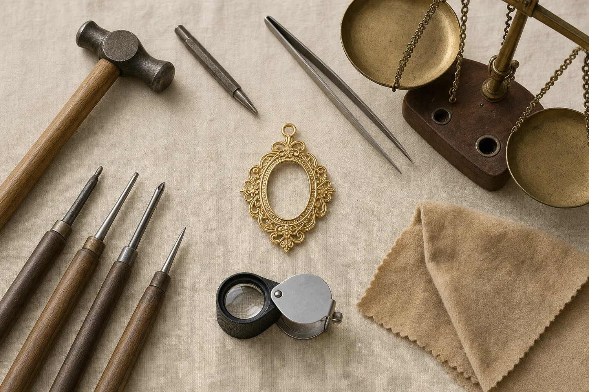

Honesty before the sale
Weight and purity are shown on the scale. Making charges are quoted as a separate figure, never buried in a single number.
We make and sell fine gold jewellery in Narowal, Punjab. The house is led by Asim Hussain and associated with AWF. What follows is simply how we work — no more, no less.

“I would rather explain a price for twenty minutes than sell a piece someone regrets.”
Asim Hussain leads Al-Kwait Jewellers and is present on the floor most days. He works between the counter and the bench: agreeing a design with a family in the morning, checking the back of a setting in the afternoon.
His rule for the house is unglamorous and non-negotiable — the customer sees the weight, the purity and the making charge, separately, before anything is wrapped. That is the whole basis on which families come back with the next daughter, the next occasion.
We have deliberately kept this list short. Each line is something a customer can check on the day.
Weight and purity are shown on the scale. Making charges are quoted as a separate figure, never buried in a single number.
We produce fewer pieces so that filing, granulation and setting are finished properly — including the surfaces nobody photographs.
There is no commission pressure on our floor. Families are welcome to look, measure, think and come back.
Bridal weight is planned around a whole evening of wearing, and everyday pieces around a whole day of it.
Cleaning, re-polishing, re-sizing and re-stringing remain available for anything we have made.
One showroom in Narowal. We would rather be known well in one town than thinly in ten.
Not a list of dates — the stages that actually changed how we work.
The house began the way most goldsmithing does in Punjab: years at someone else's bench, learning to draw wire, file clean edges and read a stone before ever quoting a price.
A dedicated bench meant we could stop reselling other people's castings. Filigree, granulation and stone-setting moved in-house, and with them the ability to say yes to a family's own design.
Opening a proper showroom changed the relationship. Daylight at the counter, seating for a whole family, and a display arranged so pieces can be compared honestly side by side.
As bridal work grew, we formalised it: consultation, sketch, weight plan, stone selection, and a schedule agreed in advance of the wedding date.
Under Asim Hussain, and associated with AWF, the house continues as one showroom with one bench. The ambition is depth rather than branches: better finishing, clearer pricing, longer relationships.
Bring an idea, a photograph or simply a date in mind. We will sit with you, show you the gold in daylight and quote openly by weight and making.